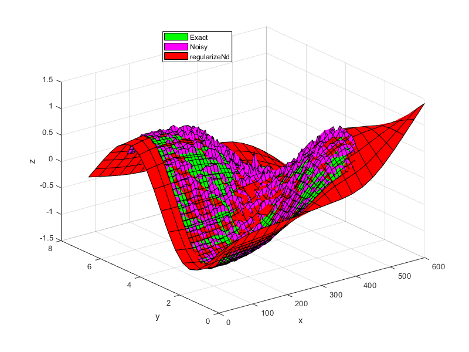

Documentation¶
An 8-part tutorial series, additional regularizeNd insights, and a deeper dive into the package are available on the project page below. The material overlaps with the Examples section, but is not identical.
lsqConstrainedAlternative¶
- lsqConstrainedAlternative(C, d, AInequality, bInequality)¶
lsqConstrainedAlternative solves the least squares inequality constraint problem by reformulation to minimal distance problem
x = lsqConstrainedAlternative(C,d,AInequality,bInequality)
- Inputs
C: Multiplier matrix, specified as a matrix of doubles. C represents the multiplier of the solution x in the expression \(Cx - d\). C is M-by-N, where M is the number of equations, and N is the number of elements of x.
d: Constant vector, specified as a vector of doubles. d represents the additive constant term in the expression \(Cx - d\). d is M-by-1, where M is the number of equations.
AInequality: Linear inequality constraint matrix, specified as a matrix of doubles. AInequality represents the linear coefficients in the constraints \(A_{Inequality}x \leq b_{Inequality}\). AInequality has size Mineq-by-N, where Mineq is the number of constraints and N is the number of elements of x. To save memory, pass AInequality as a sparse matrix.
bInequality: Linear inequality constraint vector, specified as a vector of doubles. bInequality represents the constant vector in the constraints \(A_{Inequality}x \leq b_{Inequality}\). bInequality has length Mineq, where AInequality is Mineq-by-N.
- Outputs
x: Solution, returned as a vector.
- Description
Solves:
\(\min\limits_{x} \frac{1}{2} \lVert Cx - d \rVert_2^2\) subject to \(Ax \leq b\)
lsqConstrainedAlternative reformulates a linear optimization problem with inequality constraint to a minimal distance problem and uses lsqnonneg to solve the problem. Minimal distance problem looks like this:
\(\min\limits_{x} \lVert x \lVert^2\) subject to \(\bar{A}x \leq \bar{b}\)
See the following link for discussion: https://www.mathworks.com/matlabcentral/answers/402953-reformulate-a-constrained-linear-least-square-problem?s_tid=prof_contriblnk
For more information see: Lawson, C. L., and R. J. Hanson. “Solving Least Squares Problems, Classics in Applied Mathematics, SIAM, 1995.”
- Example
C = [0.9501 0.7620 0.6153 0.4057 0.2311 0.4564 0.7919 0.9354 0.6068 0.0185 0.9218 0.9169 0.4859 0.8214 0.7382 0.4102 0.8912 0.4447 0.1762 0.8936]; d = [0.0578 0.3528 0.8131 0.0098 0.1388]; AInequality = [0.2027 0.2721 0.7467 0.4659 0.1987 0.1988 0.4450 0.4186 0.6037 0.0152 0.9318 0.8462]; bInequality = [0.5251 0.2026 0.6721]; x = lsqConstrainedAlternative(C, d, AInequality, bInequality) % Compare with lsqlin(C, d, AInequality, bInequality) x = 4×1 0.12986 -0.57569 0.4251 0.24384
- See Also
lsqlin, regularizeNdMatrices
monotonicConstraint¶
- monotonicConstraint(xGrid, dimension, dxMin)¶
monotonicConstraint generates matrices for a monotonic increasing constraint of \(Ax\leq b\)
[A,b] = monotonicConstraint(xGrid) [A,b] = monotonicConstraint(xGrid,dimension) [A,b] = monotonicConstraint(xGrid,dimension,dxMin)
- Inputs
xGrid (cell array): cell array of grid vectors
dimension ((1,1), default=1): The monotonic constraint is formed across this dimension.
dxMin (default=0): The minimum difference between different elements of x. \(x(i+l) >= x(i) + \Delta x_{min}\)
- Outputs
A: A matrix in \(Ax\leq b\)
b: b vector in \(Ax\leq b\)
- Description
This function is mainly used in conjunction with regularizeNdMatrices to create monotonic increasing constraints. Monotonically decreasing constraints are just the negative of A, Aneg = -A and bneg = b.
The main point of this function is to setup a monotonic increasing constraint in the form \(Ax\leq b\) that can be used in lsqlin or similar. To formulate this we start with
\[\begin{split}\begin{aligned} x_2 &\ge x_1 + \Delta x_{\min} \\ x_2 - x_1 &\ge \Delta x_{\min} \\ x_1 - x_2 &\le -\Delta x_{\min} \end{aligned}\end{split}\]Then generalize this to a matrix form: \(Ax\leq b\)
\[\begin{split}A = \begin{bmatrix} 1 & -1 & 0 & 0 & \dots & 0 \\ 0 & 1 & -1 & 0 & \dots & 0 \\ 0 & 0 & 1 & -1 & \dots & 0 \\ \vdots & \vdots & \vdots & \vdots & \ddots & \vdots \\ 0 & 0 & 0 & 0 & 1 & -1 \end{bmatrix}, \qquad b = \begin{bmatrix} -\Delta x_{\min} \\ -\Delta x_{\min} \\ \vdots \\ -\Delta x_{\min} \end{bmatrix}.\end{split}\]Then we need to generalize this to expanding across an n-dimensional grid at the m dimension. This will produce a different structure in A. i.e. The 1 and -1 in a row mat not be adjacent to each other.
- Example
xGrid = {1:10}; [A,b] = monotonicConstraint(xGrid) full(A) % 2d example xGrid2 = {1:5, 10:15}; dimension = 2; bMax = 1e-3; [A,b] = monotonicConstraint(xGrid2,dimension, bMax) full(A) % monotonic decreasing Aneg = -A; bneg = b; full(Aneg)
regularizeNd¶
- regularizeNd(x, y, xGrid, smoothness, interpMethod, solver, maxIterations, solverTolerance)¶
regularizeNd Fits a nD lookup table with smoothness to scattered data.
yGrid = regularizeNd(x, y, xGrid) yGrid = regularizeNd(x, y, xGrid, smoothness) yGrid = regularizeNd(x, y, xGrid, smoothness, interpMethod) yGrid = regularizeNd(x, y, xGrid, smoothness, interpMethod, solver) yGrid = regularizeNd(x, y, xGrid, smoothness, interpMethod, solver, maxIterations) yGrid = regularizeNd(x, y, xGrid, smoothness, interpMethod, solver, maxIterations, solverTolerance)
- Inputs:
x (double, Column vector or matrix of column vectors): Contains scattered input data. Each row contains one point. Each column corresponds to a dimension.
y (double, column vector): Contains the corresponds output values to x. y has the same number of rows as x.
xGrid (cell array): Contains vectors defining the nodes in the grid in each dimension. xGrid{1} corresponds with x(:,1) for instance. Unequal spacing in the grid vectors is allowed. The grid vectors must completely span x. For instance the values of x(:,1) must be within the bounds of xGrid{1}. If xGrid does not span x, an error is thrown.
smoothness (default=0.01): Scalar or vector. - The ratio of smoothness to fidelity of the output surface/hypersurface. i.e. ratio of “smoothness” to “goodness of fit.” This must be a positive real number. If it is a vector, it must have same number of elements as columns in x.
Smoothness is independent of the number points in each direction, the aspect ratio between axes, or the scale of the overall problem which is the ratio of fidelity equations to smoothness equations.
A smoothness of 1 gives equal weight to fidelity (goodness of fit) and smoothness of the output hypersurface. This results in noticeable smoothing. If your input data has little or no noise, use 0.01 to give smoothness 1% as much weight as goodness of fit.
If this parameter is a vector, then it defines the relative smoothing to be associated with each axis/dimension. This allows the user to apply a different amount of smoothing in the each axis/dimension.
interpMethod (string, default=”linear”): Denotes the interpolation scheme used to interpolate the data.
Even though there is a computational complexity difference between linear, nearest, and cubic interpolation methods, the interpolation method is not the dominant factor in the calculation time in regularizeNd. The dominant factor in calculation time is the size of the grid and the solver used. So in general, do not choose your interpolation method based on computational complexity. Choose your interpolation method because of accuracy and shape that you are looking to obtain.
“linear” - Uses linear interpolation within the grid. linear interpolation requires that extrema occur at the grid points. linear should be smoother than nearest for the same grid. As the number of dimension grows, the number of grid points used to interpolate at a query point grows with 2^nDimensions. i.e. 2d needs 4 points, 3d needs 8 points, 4d needs 16 points per query point. In general, linear can use smaller smoothness values than cubic and still be well conditioned.
“nearest” - Nearest neighbor interpolation. Nearest should be the least complex but least smooth.
“cubic” - Uses Lagrange cubic interpolation. Cubic interpolation allows extrema to occur at other locations besides the grid points. Cubic should provide the most flexible relationship for a given xGrid. As the number of dimension grows, the number of grid points used to interpolate at a query point grows with 4^nDimensions. i.e. 2d needs 16 points, 3d needs 64 points, 4d needs 256 points per query point. cubic has good properties of accuracy and smoothness but is the most complex interpMethod to calculate.
solver (string, default=”normal”): The solver used for the resulting linear system. The default is most often the best choice.
What solver should you use? The short answer is use “normal” as a first guess. “\” may be best ill-conditioned problems. If you receive rank deficiency warnings with “normal”, try the “\” solver. Otherwise, use the “normal” solver because it is usually faster than the “\” solver.
The larger the numbers of grid points, the larger the solve time. Since the equations generated tends to be well conditioned, the “normal” solver is a good choice. Beware using “normal” when a small smoothing parameter is used, since this will make the equations less well conditioned. The “normal” solver for large grids is 3x faster than the “\”.
Use the “pcg”, “symmlq”, or “lsqr” solver when the “normal” and “\” fail. Out of memory errors with “normal” or “\” are reason to try the iterative solvers. These errors are rare however they happen. Start with the “pcg” solver. Then “symmlq”. Finally try “lsqr” solver. The “lsqr” solver is usually slow compared to the “pcg” and “symmlq” solver.
“\” - uses matlab’s backslash operator to solve the sparse system. This is most likely the sparse QR solver.
“lsqr” - Uses the MATLAB lsqr solver. This solver is not recommended. Try “pcg” or “symmlq” first and use “lsqr” as a last resort. Experiments have shown that “pcg” and “symmlq” solvers are faster and just as accurate as “lsqr” for the matrices generated by regularizeNd. The same preconditioner as the “pcg” solver is used.
“normal” - Constructs the normal equation and solves. x = (A’A)\(A’*y). From testing, this seems to be a well conditioned and faster way to solve this type of equation system than backslash x = A\y. Testing shows that the normal equation is 3x faster than the “\” solver for this type of problem. A’*A preserves the sparsity and is symmetric positive definite. Often A’*A will have less nonzero elements than A. i.e. nnz(A’*A) < nnz(A).
“pcg” - Calls the MATLAB pcg iterative solver that solves the normal equation, (A’A)*x = A’*y, for x. Use this solver first when “normal” and “\” fail. The “pcg” solver tries to generate the Incomplete Cholesky Factorization (ichol) as a preconditioner. If Incomplete Cholesky Factorization fails, then diagonal compensation is added. There may be a case where the preconditioner just cannot be calculated and thus no preconditioner is used.
“symmlq” - Calls the MATLAB symmlq iterative solver that solves the normal equation, (A’A)*x = A’*y, for x. Use this solver if “pcg” has issues. “symmlq” uses the same preconditioner as “pcg”.
maxIterations (default=min(1e5, nTotalGridPoints)): Only used if the solver is set to the iterative solvers, ‘lsqr’, ‘pcg’, or ‘symmlq’. Reducing this will speed up the solver at the cost of accuracy. Increasing it will increase accuracy at the cost of time. The default value is the smaller of 100,000 and the number of nodes in the grid.
solverTolerance (default=1e-11*abs(max(y,[],”all”) - min(y,[],”all”))): Only used if the solver is set to the iterative solvers, ‘lsqr’, ‘pcg’, or ‘symmlq’. The solverTolerance is used with ‘lsqr’, ‘pcg’, or ‘symmlq’. Smaller increases accuracy and reduces speed. Larger decreases accuracy and increases speed.
- Output:
yGrid (array): Contains the fitted surface or hypersurface corresponding to the grid points xGrid. yGrid is in the ndgrid format. In 2d, ndgrid format is the transpose of meshgrid format.
- Description
regularizeNd answers the question what is the best possible lookup table that the scattered data input x and output y in the least squares sense with smoothing? regularizeNd is meant to calculate a smooth lookup table given n-D scattered data. regularizeNd supports extrapolation from a scattered data set as well.
The calculated lookup table yGrid is meant to be used with griddedInterpolant class with the conservative memory form. Call griddedInterpolant like F = griddedInterpolant(xGrid, yGrid).
Desirable properties of regularizeNd:
Calculates a relationship between the input x and the output y without definition of the functional form of x to y.
Often the fit is superior to polynomial type fitting without the wiggles.
Extrapolation is possible from a scattered data set.
After creating the lookup table yGrid and using it with griddedInterpolant, as the query point moves away from the scattered data, the relationship between the input x and output y becomes more linear because of the smoothness equations and no nearby fidelity equations. The linear relationship is a good choice when the relationship between x and y is unknown in extrapolation.
regularizeNd can handle 1D, 2D, nD input data to 1D output data. RegularizeData3D and gridfit can only handle 2D input and 1D out (total 3D).
regularizeNd can handle setting the smoothness to 0 in any axis/dimension. This means no smoothing is applied in a particular axis/dimension and the data is just a least squares fit of a lookup table in that axis/dimension.
For an introduction on how regularization works, start here: https://mathformeremortals.wordpress.com/2013/01/29/introduction-to-regularizing-with-2d-data-part-1-of-3/
- Acknowledgement
Special thanks to Peter Goldstein, author of RegularizeData3D, for his coaching and help through writing regularizeNd.
- Version
2024-06-16. Version 3.+ The arguments block was implemented. This implies that all text strings are now case sensitive. Passing an empty argument doesn’t work.
- Example
% setup some input points, output points, and noise x = 0.5:0.1:4.5; y = 0.5:0.1:5.5; [xx,yy] = ndgrid(x,y); z = tanh(xx-3).*sin(2*pi/6*yy); noise = (rand(size(xx))-0.5).*xx.*yy/30; zNoise = z + noise; % setup the grid for lookup table xGrid = linspace(0,6,210); yGrid = linspace(0,6.6,195); gridPoints = {xGrid, yGrid}; % setup some difference in scale between the different dimensions/axes xScale = 100; x = xScale*x; xx=xScale*xx; xGrid = xScale*xGrid; gridPoints{1} = xGrid; % smoothness parameter. i.e. fit is weighted 1000 times greater than % smoothness. smoothness = 0.001; % regularize zGrid = regularizeNd([xx(:), yy(:)], zNoise(:), gridPoints, smoothness); % Note this s the same as % zGrid = regularizeNd([xx(:), yy(:)], zNoise(:), gridPoints, smoothness, 'linear', 'normal'); % create gridedInterpolant function F = griddedInterpolant(gridPoints, zGrid, 'linear'); % plot and compare surf(x,y,z', 'FaceColor', 'g') hold all; surf(x,y,zNoise','FaceColor', 'm') surf(xGrid, yGrid, zGrid', 'FaceColor', 'r') xlabel('x') ylabel('y') zlabel('z') legend({'Exact', 'Noisy', 'regularizeNd'},'location', 'best');

regularizeNdMatrices¶
- regularizeNdMatrices(x, xGrid, smoothness, interpMethod)¶
Returns the needed matrices used in the regulareNd problem.
[Afidelity, Lreg] = regularizeNdMatrices(x, xGrid) [Afidelity, Lreg] = regularizeNdMatrices(x, xGrid, smoothness) [Afidelity, Lreg] = regularizeNdMatrices(x, xGrid, smoothness, interpMethod)
- Inputs:
x (double, Column vector or matrix of column vectors): Contains scattered input data. Each row contains one point. Each column corresponds to a dimension.
xGrid (cell array): Contains vectors defining the nodes in the grid in each dimension. xGrid{1} corresponds with x(:,1) for instance. Unequal spacing in the grid vectors is allowed. The grid vectors must completely span x. For instance the values of x(:,1) must be within the bounds of xGrid{1}. If xGrid does not span x, an error is thrown.
smoothness (default=0.01): Scalar or vector. - The ratio of smoothness to fidelity of the output surface/hypersurface. i.e. ratio of “smoothness” to “goodness of fit.” This must be a positive real number. If it is a vector, it must have same number of elements as columns in x.
Smoothness is independent of the number points in each direction, the aspect ratio between axes, or the scale of the overall problem which is the ratio of fidelity equations to smoothness equations.
A smoothness of 1 gives equal weight to fidelity (goodness of fit) and smoothness of the output hypersurface. This results in noticeable smoothing. If your input data has little or no noise, use 0.01 to give smoothness 1% as much weight as goodness of fit.
If this parameter is a vector, then it defines the relative smoothing to be associated with each axis/dimension. This allows the user to apply a different amount of smoothing in the each axis/dimension.
interpMethod (string, default=”linear”): Denotes the interpolation scheme used to interpolate the data.
Even though there is a computational complexity difference between linear, nearest, and cubic interpolation methods, the interpolation method is not the dominant factor in the calculation time in regularizeNd. The dominant factor in calculation time is the size of the grid and the solver used. So in general, do not choose your interpolation method based on computational complexity. Choose your interpolation method because of accuracy and shape that you are looking to obtain.
“linear” - Uses linear interpolation within the grid. linear interpolation requires that extrema occur at the grid points. linear should be smoother than nearest for the same grid. As the number of dimension grows, the number of grid points used to interpolate at a query point grows with 2^nDimensions. i.e. 2d needs 4 points, 3d needs 8 points, 4d needs 16 points per query point. In general, linear can use smaller smoothness values than cubic and still be well conditioned.
“nearest” - Nearest neighbor interpolation. Nearest should be the least complex but least smooth.
“cubic” - Uses Lagrange cubic interpolation. Cubic interpolation allows extrema to occur at other locations besides the grid points. Cubic should provide the most flexible relationship for a given xGrid. As the number of dimension grows, the number of grid points used to interpolate at a query point grows with 4^nDimensions. i.e. 2d needs 16 points, 3d needs 64 points, 4d needs 256 points per query point. cubic has good properties of accuracy and smoothness but is the most complex interpMethod to calculate.
- Output
Afidelity (sparse matirx): Contains the fidelity equations. size(A,1) ==size(x,1) == size(y,1). The number of rows in A corresponds to the number of points in x,y. The number of columns corresponds to the number points in the grid.
Lreg (Cell array): L{i} corresponds to the scaled 2nd derivative regularization of the ith dimension.
- Description
regularizeNdMatrices is most often is used for adding contraints to what regularizeNd would produce. The matrices output from regularizeNdMatrices are used with constraint matrices in a linear least squares constrained optimization problem. For an example of how to do constrained optimization with regularizeNdMatrices, see “constraint_and_Mapping_Example” example.
regularizeNdMatrices outputs the matrices used in regularizeNd. There are two parts: the fidelity part and the regularization part. The fidelity controls the accuracy of the fitted lookup table. The regularization part controls the smoothness of the lookup table.
For an introduction on how regularization works, start here: https://mathformeremortals.wordpress.com/2013/01/29/introduction-to-regularizing-with-2d-data-part-1-of-3/
- Acknowledgement
Special thanks to Peter Goldstein, author of RegularizeData3D, for his coaching and help through writing regularizeNd.
- Version
2024-06-16. Version 3.+ The arguments block was implemented. This implies that all text strings are now case sensitive. Passing an empty argument doesn’t work.
- Example
% setup some input points, output points, and noise x = 0.5:0.1:4.5; y = 0.5:0.1:5.5; [xx,yy] = ndgrid(x,y); z = tanh(xx-3).*sin(2*pi/6*yy); noise = (rand(size(xx))-0.5).*xx.*yy/30; zNoise = z + noise; % setup the grid for lookup table xGrid = linspace(0,6,210); yGrid = linspace(0,6.6,195); gridPoints = {xGrid, yGrid}; % setup some difference in scale between the different dimensions/axes xScale = 100; x = xScale*x; xx=xScale*xx; xGrid = xScale*xGrid; gridPoints{1} = xGrid; % smoothness parameter. i.e. fit is weighted 1000 times greater than smoothness. smoothness = 0.001; % regularize [Afidelity, Lreg] = regularizeNdMatrices([xx(:), yy(:)], gridPoints, smoothness); % assemble the linear least squares problem A = vertcat(Afidelity, Lreg{:}); b = vertcat(zNoise(:), zeros(size(A,1)-numel(zNoise),1)); % solve the linear system zGrid = reshape(A\b,cellfun(@numel, gridPoints)); % create girrdedInterpolant function F = griddedInterpolant(gridPoints, zGrid, 'linear'); % plot and compare surf(x,y,z', 'FaceColor', 'g') hold all; surf(x,y,zNoise','FaceColor', 'm') surf(xGrid, yGrid, zGrid', 'FaceColor', 'r') xlabel('x') ylabel('y') zlabel('z') legend({'Exact', 'Noisy', 'regularizeNd'},'location', 'best');